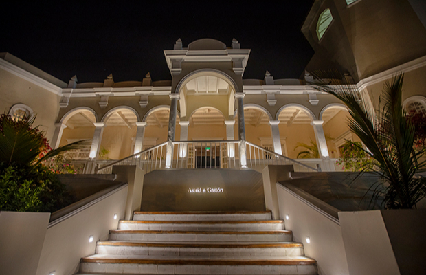

Turismo na América Latina
Melhores Restaurantes

Central
Central Restaurante é um restaurante localizado no distrito de Barranco, Lima, Peru. O Central Restaurante é o carro-chefe do chef peruano Virgilio Martínez Véliz e serve como sua oficina na investigação e integração de ingredientes indígenas peruanos no cardápio do restaurante.

La Mar
Este restaurante tranquilo é especializado em culinária peruana, especialmente ceviche e peixe. A proposta da casa é ter sempre os frutos do mar mais frescos para cada época. O menu troca a cada temporada mantendo sempre os clássicos no cardápio como os ceviches com opções como: Clássico, Degustação e Vegetariano.

Astrid y Gaston
Com vários prêmios e elogios, como o “2018 Diners Club Lifetime Achievement Award” no evento dos 50 Melhores Restaurantes do Mundo em 2018, o “Art of Hospitality Award” em 2017, “Melhor Chefe de Pastelaria” à Astrid Gutsche em 2015 e o “restaurante número 1 na lista dos 50 Melhores Restaurantes da América Latina” em 2013, Astrid y Gastón continuam a crescer e a mostrar o que há de melhor na gastronomia do Peru. Restaurante requintado especializado em pratos regionais de frutos do mar e carne, além de coquetéis e vinho.